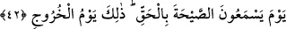

size, hükmünüzün verilmesi için toplanmanızı emrediyor” diyeceği de söylenmiştir.
İsrafil’in (a.s.) üfleyip Cebrail’in (a.s.) haşrı nidâ edeceği de söylenmiştir.
“Yakın bir yerden”, semâya yakın bir yerden demektir. Burası, Beytü’l-Makdis’teki
kayadır. Zira Beytü’l-Makdis gökyüzüne, yeryüzündeki diğer bütün bölgelerden 12 veya
18 mil daha yakındır. Burası, Hz. Ali’nin (r.a.) de dediği gibi arzın ortasıdır. Bu
ibârenin muhtemel bir diğer mânâsı, herkese eşit derecede ulaşacak şekilde yakın bir
yerden seslenileceğidir. Yani onun sesi her yere ulaşır ve hiçbir yer ona uzak gelmez.
Keşfü’l-esrâr’da şöyle geçer: Buranın yakın olarak anılmasının sebebi, herkesin
nidâyı kulağının kenarından/kulağı tarafından duyacak olmasıdır. Ayaklarının altından
veya saç diplerinden ve her bir saç telinden duyacağı da söylenmiştir. Belki de bu, ilk
yaratılıştaki “Kün” emri gibi yeniden yaratılışta olacaktır.
42. O gün insanlar bu sesi gerçekten işiteceklerdir. İşte bu, çıkış günüdür.
İşitecek olanlar, “ruhlar”dır. Bunun “vücutlar” olacağı da söylenmiştir. Çünkü,
Aynu’l-maânî’de de geçtiği üzere, Allah Teala bu duymayı kırk yıl boyunca
sürdürecektir.
“Sayha”, ikinci üfleyişle gerçekleşen dirilmenin korkunç sesidir. Zaten bu kelime
Arapçada, “en yüksek sesle atılan çığlık” mânâsında kullanılır.
İşte bu gün, kabirlerden çıkış günüdür. “Yevmü’l-hurûc/çıkış günü”, kıyamet gününün
isimlerindendir. Bayram günü de buna teşbihle “yevmü’l-hurûc” olarak anılmaktadır.
Bu âyetin mânâsı şöyledir: İnsanlar, diriliş hakikatiyle iç içe geçmiş bir vaziyette çığlığı
duydukları gün kabirlerden hesaba doğru giderler. Hesaptan sonra ya cennete ya da
cehenneme varırlar.
Keşfü’l-esrâr’da şöyle geçer: Bu nidâ âleme ulaştığında halka ızdırap verir. Çürümüş
etler ve deriler, eriyip toprak olmuş ve zerre zerre birbirine karışmış kemikler, kimi
batıda kimi doğuda, kimi karada kimi denizde, kimini kurtlar yemiş, kimini kuşlar
parçalamış herkes bir araya gelir, zerre zerre kendi yerlerine geçerler. Âlemin
başlangıcından kıyamet gününe kadar yedi iklimde bulunan hayat sâhibi her canlı bir
araya gelir, bedenleri yeniden yapılır, sûretleri ortaya çıkarılır, organları ve parçaları
düzenlenip bir araya getirilir. Ne zerre kadar az ne zerre kadar fazla, şunun bir kılı dahi
bununkine karışmaz, şunun bir zerresi bile onunkine bağlanmaz. Âh o çetin gün haşr ü
neşr günü, hayır ve şerrin karşılık bulduğu cezâ günü. Doğruluk terâzisinin asıldığı, kazâ
ve hüküm kürsüsünün konulduğu, heybet sergisinin serildiği, bütün insanların diz üstü
çöktüğü gün ki; “O gün her ümmeti, diz çökmüş görürsün.” (el-Câsiye, 45/28)
Cehennem öyle bağırır ki; “Neredeyse cehennem öfkesinden çatlayacak!” (el-Mülk,
67/8) Zebâniler âsilere asılmış; “Onu alın, bağlayın, sonra alevli ateşe atın onu!”